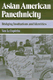
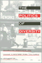
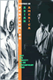

|

|
Hapa Girl
A Memoir
Chai, May-lee
Honorable Mention at the 2007 Gustavus Myers Outstanding Book Awards
Named one of 2008’s Notable Books in the Kiriyama Prize |

|
Paper
Son
One Man's Story
Chin,
Tung Pok with Winifred C. Chin, introduction by K. Scott Wong
Outstanding Academic Title, Choice, 2001 |

|
Mobilizing Gay Singapore
Rights and Resistance in an Authoritarian State
Chua, Lynette J.
Distinguished Book Award from the Sociology of Law Section of the American Sociological Association, 2015
Awarded a certificate from the International Convention of Asia Scholar's Book Prize acknowledging it as Ground-Breaking Matter in the Social Sciences category by the 2015 Reading Committee, 2015
|

|
Q
& A
Queer in Asian America
edited
by Eng, David L. and Alice Y. Hom
Honorable Mention for Outstanding Books Awards, Gustavus
Myers Center for the Study of Bigotry and Human Rights in North
America, 1999
Lambda Literary Award for Best Book in Lesbian and Gay Anthologies/Non-Fiction,
1998
Book Award from The Association for Asian American Studies, 2001 |

|
Asian
American Panethnicity
Espiritu,
Yen Le
Outstanding Book Award, Association for Asian American Studies,
1994
Outstanding Academic Title, Choice, 1994 |

|
The
First Suburban Chinatown
The Remarking of Monterey Park, California
Fong,
Timothy P.
Outstanding Book Award in the Social Sciences, Association
for Asian American Studies, 1995
Donald H. Pflueger Local History Award, Historical Society of Southern
California, 1999 |

|
Organizing
Asian American Labor
The Pacific Coast Canned-Salmon Industry, 1870-1942
Friday,
Chris
Outstanding Book in History Award, Association for Asian
American Studies, 1995 |

|
The
Politics of Diversity
Immigration, Resistance, and Change in Monterey Park, California
Horton,
John
Robert E. Park Award, Community and Urban Section of the
American Sociological Association, 1996 |

|
Making a Global Immigrant Neighborhood
Brooklyn's Sunset Park
Hum, Tarry
Honorable Mention from the Association of Collegiate Schools of Planning's Paul Davidoff Award, 2015
|

|
Performing Asian America
Race and Ethnicity on the Contemporary Stage
Lee, Josephine
Lifetime Achievement Award from the Association of Asian American Studies Conference, 2016
|

|
Orientals
Asian Americans in Popular Culture
Lee,
Robert G.
Best Book Award Winner Culture Studies/Popular Culture, Northeast
Popular Culture/American Culture Association, 2000
Honorable Mention for the John Hope Franklin Publication Prize
for the best-published book in American Studies from the American
Studies Association, 1999
Best Book Award for the Social Construction of Race, The American
Political Science Association, 1999 |

|
Searching for Mr. Chin
Constructions of Nation and the Chinese in West Indian Literature
Lee-Loy, Anne-Marie
Gordon K. and Sybil Lewis Book Award, 2011 |

|
The
Making of Asian America through Political Participation
Lien,
Pei-te
Best Book published in the areas of Political Participation,
Voting, Elections, and Political Behavior in Racial/Ethnic Politics
by the Organized Section on Race, Ethnicity, and Politics of the
American Political Science Association (APSA), 2002 |

|
Desis
in the House
Indian American Youth Culture in New York City
Maira,
Sunaina Marr
Honorable Mention for the Lora Romero First Book Publication
Prize from the American Studies Association, 2003 |

|
Cultural
Compass
Ethnographic Explorations of Asian America
edited
by Manalansan, IV, Martin F.
Cultural Studies Book Award, given by the Association for
Asian American Studies, 2000 |

|
Cane
Fires
The Anti-Japanese Movement in Hawaii, 1865-1945
Okihiro,
Gary Y.
Outstanding Book in History and Social Science Award, Association
for Asian American Studies, 1992 |

|
Songs
of the Caged, Songs of the Free
Music and the Vietnamese Refugee Experience
Reyes,
Adelaida
Book Award from the U.S. Branch of the International Association
for the Study of Popular Music, 2000 |

|
The
Philippine Temptation
Dialectics of Philippines-U.S. Literary Relations
San
Juan, Jr., E.
Outstanding Academic Book, Choice, 1996 |

|
Laotian Daughters
Working toward Community, Belonging, and Environmental Justice
Shah, Bindi V.
Association for Asian American Studies' Outstanding Book Award in the category Social Science, 2014
Honorable Mention, Asia and Asian America Section of the American Sociological Association, 2013 |

|
The
World Next Door
South Asian American Literature and the Idea of America
Srikanth, Rajini
Outstanding Academic Title, Choice, 2005
Cultural Studies Book Award, Association for Asian American Studies,
2006 |

|
Sweating Saris
Indian Dance as Transnational Labor
Srinivasan, Priya
Emory Elliott Book Award, 2012 |

|
Nisei/Sansei
Shifting Japanese American Identities and Politics
Takahashi,
Jere
Honorable Mention for Outstanding Books Awards, Gustavus
Myers Center for the Study of Bigotry and Human Rights in
North America, 1997 |

|
Mobilizing an Asian American Community
Võ, Linda
Trinh
Social Science Book Honorable Mention, Association for Asian American
Studies, 2006 |

|
Claiming
America
Constructing Chinese American Identities during the Exclusion
Era
edited
by Wong, K. Scott and Sucheng Chan
Book Award from the Association for Asian American Studies,
2001 |

|
To
Save China, To Save Ourselves
The Chinese Hand Laundry Alliance of New York
Yu,
Renqiu
Outstanding Academic Title, Choice, 1994
Outstanding Book in History Award, Association for Asian American
Studies, 1993 |

|
The Coolie Speaks
Chinese Indentured Laborers and African Slaves in Cuba
Yun, Lisa
Outstanding Academic Title, Choice, 2008 |

|
Chinatown
The Socioeconomic Potential of an Urban Enclave
Zhou,
Min, foreword by Alejandro Portes
Honorable Mention Robert E. Park Award, American Sociological
Association, 1993 |
|